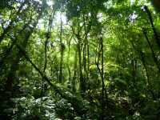

Maior espécie de felino do continente americano, a onça-pintada (nome científico: Panthera onca) é um predador topo de cadeia alimentar, sendo considerado espécie chave nos ecossistemas que habita.
O Brasil, nomeadamente a Amazônia e Pantanal abrigam as maiores populações de onça-pintada em vida livre em todo o mundo. Os outros biomas brasileiros abrigam populações reduzidas e severamente ameaçadas.  Estima-se que a Amazônia brasileira abrigue menos de 10.000 indivíduos em seus 3.459.000 km2.
Referência: PORFIRIO, Grasiela. Etnozoologia e conservação da onça-pintada (Panthera onca) no Brasil. Interações (Campo Grande), v. 20, n. 2, p. 559-574, 2019.